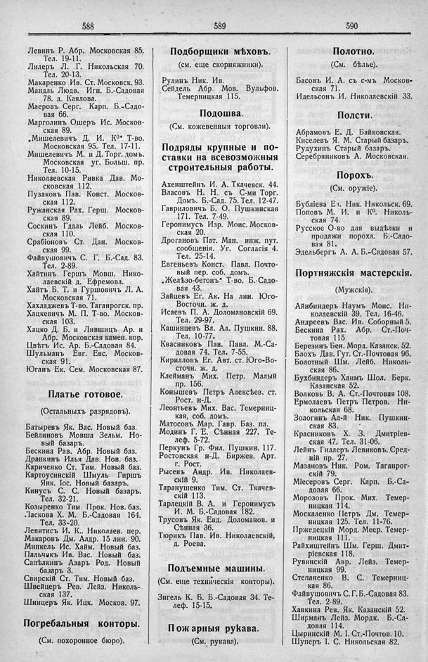

Лист источника 330
Скан

Распознанный текст
588
Левинъ Р. Абр. Московская 85.
Тел. 19-11.
Лилеръ Л. Г. Никольская 70.
Тел. 20-13.
Макаренко Ив. Ст. Московск. 93.
Мандль Людв. Игн. Б.-Садовая
78. д. Каялова.
Маеровъ Серг. Карп. Б.-Садо-
вая 66.
Марголинъ Ошеръ Ис. Москов-
ская 89.
„Мишелевичъ Д. И. К⁰“ Т-во.
Московская 95. Тел. 17-11.
Мишелевичъ М. и Д. Торг. домъ.
Московская уг. Больш. пр.
Тел. 10-15.
Николаевская Ривка Дав. Мо-
сковская 112.
Пузаковъ Пав. Конст. Москов-
ская 112.
Ружанская Рах. Герш. Москов-
ская 89.
Соскинъ Гдаль Лейб. Москов-
ская 110.
Срабіоновъ Ст. Дан. Москов-
ская 99.
Файвушовичъ С. Г. Б.-Сад. 83.
Тел. 2-89.
Хайтинъ Гершъ Мовш. Нико-
лаевскій д. Ефремова.
Хайтъ Б. Т. и Гуршовичъ Л. А.
Московская 71.
Хахладжевъ Т-во. Таганрогск. пр.
Хацкевичъ М. П. Т-во. Москов-
ская 103.
Хацко Д. Б. и Лившицъ Ар. и
Абр. Московская камен. кор.
Цвѣтъ Ис. Ар. Б.-Садовая 84.
Шульманъ Евг. Евс. Москов-
ская 91.
Юганъ Ек. Сем. Московская 87.
Платье готовое.
(Остальныхъ разрядовъ).
Батыревъ Як. Вас. Новый баз.
Бейлиновъ Мовша Зельм. Но-
вый базаръ.
Бескина Рав. Абр. Новый баз.
Драпкинъ Илья Дав. Нов. баз.
Кариченко Ст. Тим. Новый баз.
Картоусинскій Шмуль Гиршъ
Янк. Іос. Новый базаръ.
Кинусъ С. С. Новый базаръ.
Тел. 32-21.
Козыренко Тим. Прок. Нов. баз.
Ласкова Х. М. Б.-Садовая 164.
Тел. 33-20.
Левитись И. К.. Николаев. пер.
Макаровъ Дм. Алдр. 15 лин. 90.
Минкель Ис. Хайм. Новый баз.
Пальчикъ Ив. Вас. Новый баз.
Сапѣлкинъ Азаръ Род. Новый
базаръ 3.
Свирскій Ст. Тим. Новый баз.
Швейцеръ Рев. Лейз. Николь-
ская 137.
Шницеръ Як. Ицк. Москов. 97.
Погребальныя конторы.
(См. похоронное бюро).
589
Подборщики мѣховъ.
(см. еще скорняжники).
Рулинъ Ник. Ив.
Сейдель Абр. Мов. Вульфов.
Темерницкая 115.
Подошва.
(См. кожевенныя торговли).
Подряды крупные и по-
ставки на всевозможныя
строительныя работы.
Ахенштейнъ И. А. Ткачевск. 44.
Власовъ Н. Н. съ С-ми Торг.
Домъ. Б.-Сад. 75. Тел. 12-47.
Гавриловичъ Б. О. Пушкинская
171. Тел. 7-49.
Геронимусъ Изр. Моис. Москов-
ская 20.
Дрогановъ Пат. Ман. инж. пут.
сообщенія. Уг. Согласія 4.
Тел. 25-14.
Евгеньевъ Конст. Павл. Почто-
вый пер. соб. домъ.
„Желѣзо-бетонъ“ Т-во. Б.-Садо-
вая 43.
Зайцевъ Ег. Ак. На лин. Юго-
Восточн. ж. д.
Исаевъ П. А. Доломановскій 69.
Тел. 29-97.
Кашинцевъ Вл. Ал. Пушкин. 88.
Тел. 10-77.
Квасниковъ Пав. Павл. М.-Са-
довая 74. Тел. 7-55.
Кирилловъ Ег. Авт. ст. Юго-Во-
сточн. ж. д.
Клейманъ Мих. Петр. Малый
пр. 156.
Конышевъ Петръ Алексѣев. ст.
Рост. н-Д.
Леонтьевъ Мих. Вас. Темерниц-
кая, соб. домъ.
Матосовъ Мар. Гавр. Баз. пл.
Модинъ Г. Е. Сѣнная 227. Те-
леф. 5-72.
Перкунъ Гр. Фил. Пушкин. 117.
Ростовская н-Д. Биржев. Арт.
г. Рост.
Рысевъ Андр. Ив. Николаев-
скій 9.
Таранушенко Тим. Ст. Ткачев-
скій 113.
Тарлецкій В. А. и Геронимусъ
И. М. Б.-Садовая 182.
Трусовъ Як. Евд. Доломанов. и
Сѣнная 36.
Тюрикъ Пав. Ив. Николаевскій,
д. Роева.
Подъемные машины.
(См. еще техническія конторы).
Зигель К. Б. Б.-Садовая 34. Те-
леф. 15-15.
Пожарныя рукава.
(См. рукава).
590
Полотно.
(См. бѣлье).
Басовъ И. А. съ с-мъ Москов-
ская 71.
Идельсонъ И. Николаевскій 33.
Полсти.
Абрамовъ Е. Д. Байковская.
Киселевъ Я. М. Старый базаръ.
Рудухинъ Старый базаръ.
Серебряниковъ А. Московская.
Порохъ.
(См. оружіе).
Бубліева Еч. Ник. Никольск. 69.
Поповъ М. И. и К⁰. Николь-
ская 74.
Русское О-во для выдѣлки и
продажи пороха. Б.-Садо-
вая 81.
Эдельбергъ А. А. Б.-Садовая 57.
Портняжскія мастерскія.
(Мужскія).
Айнбиндеръ Наумъ Моис. Ни-
колаевскій 39. Тел. 16-46.
Андреевъ Вас. Ив. Соборный 5.
Бескина Рах. Абр. Ст.-Поч-
товая 115.
Березинъ Бен. Морд. Казанск. 52.
Блохъ Дав. Гут. Ст.-Почтовая 96.
Болотный Шм. Лейб. Николь-
ская 86.
Бухбиндеръ Хаимъ Шол. Берк.
Казанская 52.
Волковъ В. А. Ст.-Почтовая 108.
Ермолаевъ Петръ Петров. Ни-
кольская 68.
Зологинъ Ал-й Ник. Пушкин-
ская 83.
Красниковъ Х. З. Дмитріев-
ская 47. Тел. 31-06.
Лейнъ Гиллеръ Левиковъ. Сред-
ній пр. 27.
Мазановъ Ник. Ром. Таганрог-
скій 79.
Міесеровъ Серг. Карп. Б.-Са-
довая 66.
Морозовъ Прок. Мих. Темер-
ницкая 114.
Москаленко Петръ Дм. Темер-
ницкая 125. Тел. 11-76.
Пржедецкій Морд. Меер. Темер-
ницкая 111.
Райхиштейнъ Шм. Герш. Дмит-
ріевская 118.
Рувинскій Авр. Лейз. Темер-
ницкая 99.
Степаненко В. С. Темерниц-
кая 86.
Файвушовичъ С. Г. Б.-Садовая 83.
Тел. 2-89.
Хавкина Рев. Як. Казанскій 52.
Ширманъ Лейз. Мордк. Б.-Са-
довая 114.
Цыринскій М. І. Ст.-Почтов. 10.
Шуперъ І. С. Никольская 82.